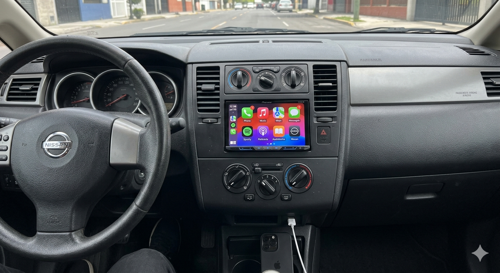

Pantalla multimedia Android
La pantalla multimedia es uno de los accesorios más completos, ya que moderniza el interior del Tiida con navegación GPS, Bluetooth y compatibilidad con aplicaciones.
- Conectividad Bluetooth y GPS
- Compatible con Android Auto
- Mejora la experiencia de manejo